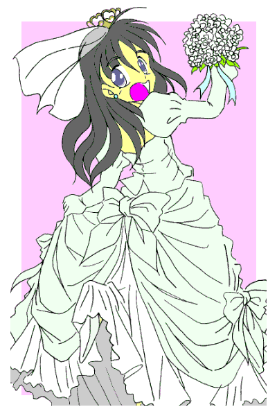
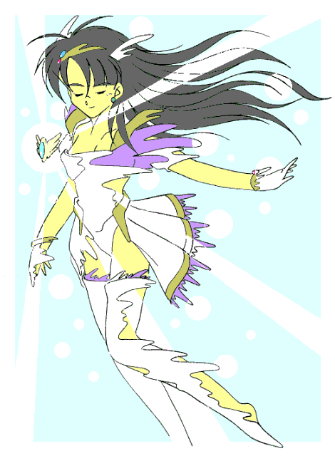
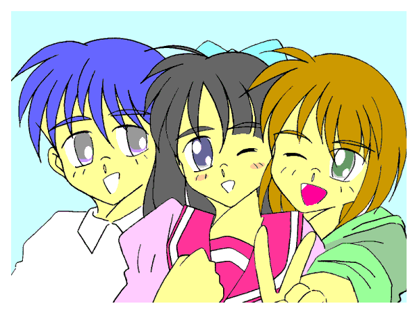

「…………まずいわね……」
病院で血液検査に始まり超音波診断に至るまで、あらゆる検査を終えた俺に向かって、届けられた検査結果に目を通した美鈴さんは、ため息をつきながら言った。
「女性化がこの前より進んでいるわ。真奈……いえ武士君、あなたあれから一度も変身してないんでしょう？」
美鈴さんの問いに俺は頷いた。
昨日は変身しそうになったけど、結局はしなかった。だから、前回美鈴さんの診断を受けてからは一度も変身してはいない。それなのに……
「……にもかかわらず女性化が進んでいる。これは武士君の女性としての部分が、男性としての部分を圧倒的に上回っているために、女性として安定してきつつある事を示しているわ。このままだと……」
「ど、どうなるんです……？」
動揺した俺の質問に返ってきた答えは、ある意味予想通りではあったが、俺にとっては死の宣告に近いものだった。
「恐らく……一ヶ月以内に武士君の中の男性としての器官は完全に消滅するわ。そして男の子に戻る可能性も……」
「消滅……ですか？」
呆然としてたずねた俺に美鈴さんは何も言わず……いや、何も言えずに視線を横に逸らせた。
俺にとって……最大の危機が今、訪れようとしていた。
変身美少女戦士ミラージュガール
最終話：そして……全ては終わり…………
作：ライターマン
俺の名前は三代武士（みしろ・たけし）。
１４歳になったばかりの、私立津留木（つるぎ）学園中等部の二年生である。
名前から判るように、俺はれっきとした男である。まあ普通、「武士」という名前から本人が女の子だと思う奴なんかいないだろうが……
だが俺の周りにいる人間の反応は少し（？）違う。……誰も俺を男として見ていないのだ！！
しかしまあ……それも仕方のないことかもしれない。
黒くサラサラな髪は腰のあたりまで伸び、身体の線は細くなったウエストから大きくなった腰を経て、細くスラリとした脚へと緩やかなカーブを描いている。
そして胸には、大きくなった二つの丸い膨らみ……
初対面でこんな姿の俺を見たら、その正体が男だ——と思う奴も普通はいないだろう。
こうなってしまったのには理由がある。
それはある出来事により、俺が「邪霊界からやってくる魔物と戦う正義の美少女戦士ミラージュガール」になってしまったためである。
昔、ミラージュガールだった母さんが当時使っていたというブローチを偶然俺が見つけ、母さんの話を聞いているうちに変身のキーワードを唱えてしまったのが、そもそもの発端だった。
力を失って今ではただの記念品——の筈だったブローチが突然光り始めると、その光に包まれた俺の身体が変化を始めた。
そして変化が終わると……俺の身体は女の子になり、その身体を白い光沢のある生地のコスチュームが包んだ！！
そう、俺は新たなるミラージュガール、白き光の美少女戦士ミラージュホワイトとして「レジスト」されてしまったのだ。
その後出会ったペルこと精霊界から来た妖精ペルティノの話では、母さんたちが閉じたこの世界と邪霊界をつなぐための「扉」が再び開いた——とのことだった。
そのため新たなミラージュガールを選ぶ事になったのだが、最初は新しいブローチを精霊界から持ってくる筈だった。だが、邪霊界が先手を打って精霊界との間に結界を張ったために、ペルは何とか無事だったものの、持ってきたブローチの方は砕けてしまった。
そこで母さんたちが持っていたブローチを復活させることにしたのだが、正義感の強い女の子にしか作用しない筈のブローチが、なぜか俺に対して「発動」してしまったのだ！！
そして俺と同様に、かつてのミラージュガールの「息子」たちが新たなミラージュガールとして「レジスト」され、協力して魔物たちと戦うことになった。
転校した先のクラスメイトの古木祐一（ふるき・ゆういち）は、青き水の美少女戦士ミラージュブルーに……
近くの公立中学に通う、女装が趣味の礼戸一明（れいと・かずあき）は、赤き炎の美少女戦士ミラージュレッドに……
断っておくが、俺たちは望んでミラージュガールに、女の子に変身している訳ではないっ！！（……礼戸は違うかも知れんが）
なのに、何で美少女戦士の正体が全員男……になってしまったのか？ その原因は精霊界でも判っていない。
そして俺の場合は、他の二人よりも不幸だった。
何故なら、他の二人が変身解除と同時に男に戻るのに対し、俺の場合は変身を解除しても、しばらくは身体が女の子のままだったのだから……
最初の頃は、身体が女の子のままで服だけ男の子の服装に戻るものだから、女の子の服と下着を常に持ち歩いて変身解除後に着替えるという生活がしばらく続いた。
この状況が改善……いや「悪化」したのは夏休みに入ってからだった。
それまでは変身後に女の子でいる時間が１０時間だったため、翌日には男に戻り、男子中学生として学校に通うことが出来た。だけど魔獣を上回る力の魔人が現れて、それまでの俺たちの力が通じなくなり、俺たちはパワーアップして武器を持つようになった。
……しかしそれは女の子としての時間までパワーアップしてしまうという、新たな「不幸」を生み出したのだった。
それまでの１０時間が１２倍になり、１２０時間——つまり、一度変身して強化した「力」を使うと、５日間は女の子として過ごさなければならなくなったのだ。
そして、その頃から魔獣や魔人が出現する回数も多くなり、身体が男に戻る前にまた変身して「力」を使い……それから５日間経たないうちにまた力を使って……などという事を繰り返し…………気が付くとかなり長い間、女の子の状態が続いてしまった。
ついには二学期が始まった時、「三代武士」として学校に通うことが出来なくなった俺は、止むを得ず別人としてもう一度転入することになった。
双子の妹、「三代真奈美」として。
……そう、つまり俺は「女子中学生」として、丈の短いスカートのセーラー服に身を包み、長い髪をリボンで結わえた姿で学生生活を送っているのだ。
これ以上の不幸があるだろうか？ いやない……などと嘆きつつ過ごしていた俺だったが、さらなる不幸が襲い掛かってきた。
俺は今日まで２ヶ月近く、ずっと女の子の身体で過ごしていた。これは「力」を使わないと倒せない相手が多かったのも確かだけど、三代真奈美として学校に通ってる現在、男の身体に戻ると自動的に「欠席」になってしまうので、あえて積極的に「力」を使ってきたためだ。
しかし、そのことによって俺の身体はより完全な女の子……というか「女性」に近づき、逆に男に戻れなくなる可能性が出てきたのだ！！
俺は、古木の母親で医者の美鈴さんから、「今後男に戻るまで『力』を使わないように」と言われた。
「力」を使えばその分、男に戻れなく可能性が高くなるから……
だが、事態は俺たちが考えていたよりも遥かに切羽詰まっていた。
「力」を使うどころか変身すらしていないのに、俺は６日経っても男に戻らず、このままでは一生女性として生きなければならないところまで追い詰められていたのだ。
「はあーっ……」
時間外のため誰もいない病院の待合室で、俺はため息をつき、手にした紙コップに入っていたコーヒーを一気に飲み干した。
…………苦かった。……コーヒーの味も、目の前に突きつけられた現実も。
椅子に座ってしばらく項垂れた俺だったが、甘い匂いとともに目の前へ別の紙コップが差し出された。
「……大丈夫？」
声をかけてきたのは古木だった。
古木と礼戸の親子は俺の診断の後、美鈴さんから俺の身体に起きている事の大まかな説明を受けていたのだが、恐らくそれが終わって俺のところに来てくれたのだろう。
「……大丈夫な訳ないだろう？ 男として最大のピンチを迎えてるってのに——」
少しふてくされた声で、俺はつぶやいた。
どうして俺が——という怒りを古木にぶつけても、しょうがないのは判っているが……だからと言って平静を保ってもいられなかった。
「…………あの……さ——」
俺の隣に座ったまましばらくじっとしていた古木が、遠慮がちに俺に語りかけてきた。
「以前、僕が女の子になって戻れないかもしれないって時にさ、三代君言ってくれたよね……『そのときは俺がお前を守ってやる。どんなときでも俺がそばにいてやる』——って……」
「……ああ」
「だから……あ、怒らないで欲しいんだけど……もし、三代君が女の子のまま元に戻れなくなっても、僕が三代君を守ってあげる。どんなときでも僕がそばにいてあげる……から——」
顔を赤くしながら話す古木の表情に、俺は少し胸が熱くなり、そして拳で古木の頭を軽くコツンと小突くと、
「バーカ、今から戻れないことを前提に話をするなよ。おまえの気持ちは嬉しいけど……な」
……と言って微笑んだ。
このとき……俺は少しだけ思ってしまった。…………このままでもいいかな……と——
そのとき母さんが待合室に入ってきて、こう言った。
「武士、ここにいたの？ ……ちょっと来て、ペルが話があるそうよ」
「特殊な魔方陣で、俺の身体を強制的に男に戻すぅ？」
驚きの声を上げる俺に、ペルはこれから行う処置について説明を始めた。
「……はい、身体の中の男性の部分を強化する魔方陣と、ミラージュガールの部分を除去してブローチに封じ込める魔方陣を変形して組み合わせて、全く新しいタイプの魔方陣を形成します。この魔方陣の一方に武士さんを、もう一方にブローチを配置することにより、武士さんの中から女性としての部分を抜き取ってブローチに封じ込め、合わせて男性としての部分を強化、増幅します。……成功すれば武士さんの身体は男性に戻ります」
「失敗したら……？」
「死んだりすることはないと思いますが……失敗した瞬間、武士さんの中の男性としての部分は消し飛び……二度と男性に戻ることはないでしょう」
「げっ！！」
「はっきり言って、成功する確率は６割程度です。前例がないですし……」
「げげっ！！」
「それに男性部分を増幅するということは、身体の中にわずかに残っているその部分を、風船を膨らませるようにして限界いっぱいまで大きくする訳ですから……調整を失敗したら、その瞬間に弾けて消えてしまいます」
「げげげっ！！」
「しかし、こうやって男性としての部分を大きくしていかないと、身体から女性的な部分を抜き取りきる前に手遅れになってしまいます。残念ですが……」
「…………つまり、他に方法はない訳か？」
「はい……申し訳ありませんが……」
すまなそうに言うペルから視線を移して、俺は古木の方を見た。
どうして古木の方を見たのかは判らない……だが複雑な表情ながらも、視線の合った俺に対して頷いたのを見て俺は決心した。
「判った。やるよ。他に方法がないのなら……わずかでも可能性があるのなら、それに賭けてみるよ」
翌日——
精霊界との「扉」近く、一晩かけてペルが作成した魔方陣の中に俺はいた。
そして俺の目の前、魔方陣の反対側には俺の変身ブローチが置かれていた。
「では……始めますよ」
ペルの言葉に俺は黙って頷いた。
するとペルはその身を振るわせ、魔方陣とブローチが輝き始めた。
身体の内側、お腹のあたりが熱くなり、やがてそれは全身に広がった。
俺は目を閉じてそれに耐えていたが、しばらくするとその熱さは静かに引いていった。
目を開いた俺は、自分の身体を確認してみた。
俺の身体は……女の子のままだった。
「……失敗…………したのか？」
「いえ、成功しました。今日のところは……ですけど。この作業は制御が難しく、また長時間行なうと武士さんの身体に危険が及ぶので、数日にわたって行う必要があるんです。今日はまだ外見に影響は出ていませんが、明日以降になれば少しずつ変わっていくはずです」
…………順調に進んでいた３回目の儀式の様相は、その瞬間に一変した。
「パルス逆流！！ 第３ステージに異常発生！！ 魔方陣の制御ができませんっ！！」
「儀式を中止して！！ 急いで！！」
「だめです！！ 魔方陣が暴走を始めましたっ！！ 」
「武士っ！！ 早くその中から出なさいっ！！」
魔方陣の外側で、ペルと母さんが悲鳴に近い声を上げる。俺は急いで魔方陣から出ようとしたけれど、体が思うように動かなかった。
魔方陣から、そしてブローチから光が溢れ出し、身動きが出来ない俺の身体へと向かい……吸い込まれていった。
「儀式は……失敗です。……武士さんの身体は……もう男性には…………」
力なく項垂れるペル。ようやく体が動くようになった俺はそんなペルを慰めた。
「そんなに落ち込まないで。ペルはよくやったよ。……仕方ないさ、これは運命だったんだよ」
そんな俺を、ペルは不思議そうに見つめる。
「武士さん……冷静ですね？ ……というか何か嬉しそうな気も——」
「えっ！？ そ、そんなことないよ。……戻れなかったのは残念だし、ショックだよ」
慌てて首を振る俺。ちょうどその時古木がそこに現れた。
「三代……さん、戻れなかったの？」
「あ、ああ……どうやらそうらしい」
引きつった笑顔を浮かべ、肩をすくめる俺。すると古木は俺に言った。
「心配しないで三代さん、僕がそばにいて守ってあげるから」
「ありがとう、古木」
優しい言葉に礼を言う俺だったが、古木は次にとんでもないことを言い出した。
「じゃあ三代さん……いや真奈美、結婚しよう」


……そして変身を終えたとき…………俺は身体の中で小さな「何か」がはじけたのを感じた。
魔人の一人がフラフラになったブルーの首を掴み、その身体を高々と上げたその時——
「待ちなさい！！」
その声にその場の全員が俺の方を見る。
……そして俺は前へと進みながら、大見得を切った。
「邪霊界より出でて闇に潜み、人を襲う悪しき者よ。世界に災いをなすお前たちの行為は、このあたしが許しません。……正義の美少女戦士ミラージュホワイトが白き光でお前たちを消滅させるから、覚悟なさい！！」
「……フンッ、たった一人で我々全員を相手にするつもりか？」
ブルーを掴んでいた魔人は嘲るように笑うと、ブルーを放り出して俺に向かってきた。
「プラグイン！！」
キーワードを唱えると俺の左腕に篭手が装着される。そこから棒状の物体を引き抜くと、刃が形成され一本の剣になった。
普段なら、ここでパワー開放のキーワードを唱えないといけないのだが……
ブウゥゥゥ————ン
「な、何だこれは！？」
引き抜いただけの剣は、まだ何もしていないのに白く輝き、低く唸るような音をたて始めた。
一瞬びっくりした俺だったが、魔人の一人が迫ってきていたのでそちらの方に集中し、身体をわずかにスライドさせてその攻撃をかわすと、そいつに向かって剣を突き出した。
「ガアァァァッ！！ ば、馬鹿なあぁぁぁっ！！」
剣は易々とその身体に突き刺さり、魔人はあっという間に光に包まれた。
今までとは違うそのパワーに、俺自身驚いたが……恐らく魔人たちの受けた衝撃はそれ以上のものだったのだろう。
今度は一人ずつ二手に分かれて、反対側から同時に攻撃してきた。
だが俺は、その攻撃を難なくかわす。
（身体が……軽い……）
いつものようなスピードアップではないが、魔人たちの攻撃が手にとるように把握でき、そして自分のイメージに身体が即座に動き出す。
攻撃をかわした俺は、すぐさまもといた場所へと移動し、互いにぶつかりそうになって動きの鈍った魔人の一人に剣を振り下ろし、余った勢いでもう一人の魔人の身体を横に薙いだ。
俺は残った魔人のうち、小さい方に狙いを定めてダッシュした。
魔人は俺の攻撃を防ごうと腕を交差させたが、俺は構わずに剣を振り下ろす。
剣は交差した腕ごと魔人の身体を真っ二つにした。
「これ程の強さとは……だが我は他の奴らとは違うぞっ！！」
そう言うと、一際大きなその魔人は印を結ぶようにして胸の前で指を組んだ。
そして次の瞬間、魔人はその身体からは想像も出来ない程のスピードで俺に襲い掛かってきた。
そのスピードは素早く、今の俺でも攻撃をかわすのがやっとだった。
俺は魔人の攻撃をかわしながら呼吸を整えた。そしてパワー開放のキーワードを唱える。
「ブーストアクセラレート！！」
すると俺の内部で時間が加速され、辺りは静寂に包まれた。
そして俺の剣とコスチュームが白く……いや銀色に輝いた。
そしてパワー開放による加速は凄まじく、魔人の動きが緩慢に見え、俺は一気に魔人との距離を詰めた。
「閃光・輝雷斬！！」
気合を込めて放った必殺の一撃は魔人を袈裟懸けに切り裂き、魔人は光と共に消滅した。
「た、武士さん……」
魔人たちを倒し、時間感覚が戻った俺の耳に入ってきたのは、呆然としたペルの声だった。
振り返るとブルーとレッドの二人も、ダメージが少し回復したのかゆっくりと立ち上がって呆然と俺を見ていた。
「どうして……」
「質問は後だ。早く『扉』を閉めないと、俺たちの努力が水の泡になってしまうぞ」
質問を遮った俺は、そう言ってペルと二人を急がせた。
「「「ディスコネクト」」」
「扉」を取り囲んだ三人の声と共に、ブローチから白と青、そして赤の三色の光が飛び出し、「扉」の周りを回り始める。
光はやがてリングになり、その直径を狭めながら扉を閉じていく。
そして光が点になり見えなくなった時、この世界と邪霊界とを結ぶ「扉」もまた消滅した……
「「「ディスチャージ」」」
扉を閉じ終えた俺たち三人は、変身を解除した。
元の男の子に戻った古木と礼戸に対し、俺は服装は変身前と同じだったが、身体は女の子のままだった。
そしてこの身体は、恐らくもう……
「それにしても、さっきのホワイトのパワーは凄まじかったよな。どうしてあんなパワーが出せたんだ？」
あまり触れないようにしようという俺への気づかいのためか、はたまた単にそっちに興味があったためか、礼戸が疑問を口にした。
「……恐らく、儀式によりブローチに封じ込めたパワーと武士さんの中で大きく膨らませていた部分が、変身によりエネルギーに転化されて相乗効果をもたらせたのでしょう」
「という事は、あれ一度きりか？」
「ええ、恐らくはもう二度とないでしょう。……それよりも武士さん——」
「ああ、判ってる……さっき変身したとき、身体の中で弾けて消えていったものがあったよ……つまり…………そういうことだろ？」
俺の言葉に、ペルは静かに頷く。
「三代君……」
呼ぶ声にそちらを向いた俺は、古木と見詰め合う形になった。
「ペル、俺たちは先に下りようぜ」「……えっ！？ わっ、ちょっと待って」
礼戸はそう言うと、まだ何か言おうとしていたペルの背中をつかんで手を振ると、その場を離れていった。
二人きりになって向き合った俺たちだったが……適当な言葉が見つからず、しばらくはその場に立ったままだった。
「…………え、えへへへ……お、俺……とうとう本物の女の子に…………なっちゃった」
ようやく俺の口から出てきた言葉は、およそ俺らしからぬセリフ。だけど今はこんな言葉しか出てこなかった。
「どうして……どうして変身したの？ 後３日待てば変身しても元に戻れたのに……『扉』を閉じるのは今日でなくてもよかったのに……」
「そんなの決まってる。お前を助けたかったからだ」
「……えっ！？」
俺のきっぱりとした答えに、古木は目を見張った。
「魔獣や魔人、それに『扉』の事も俺にとってはそれほど重要じゃなかった。……ただお前がいなくなるかも——って思ったら、すごく悲しかった。お前を傷つけようとする奴を許せなかった。ただそれだけさ…………と、ところで古木……」
顔を赤くして、俺は再び言葉に詰まる。「……お、俺のことなんだけど……す、好きか？」
「も、もちろんだよ。嫌いな訳無いじゃないか」
「それは……友人として？ それとも……」
「……っ！！ そ、それは……」
「俺は……俺はお前が……す、好きだ。……友達として、仲間としてはもちろん…………それ以上の存在として——」
「…………」
「最初は嫌でたまらなかった女の子の身体も、お前と一緒にいると何故か楽しかった。お前のそばにいると、ずっとこうしていたいと思うようになった。で、でも……お前にとっては迷惑だよな、元男のにわか女なんて——」
「そんな事ないっ！！ 最初に公園で会った時から好きだった。後で本当は男の子で好きで変身してるんじゃないと判っていても、一緒にいると楽しかったし、恋人だったらと思う事も何度もあった。でもそんなの、君にとっては迷惑でしかない事も判ってたから我慢してた。……だから……だから本当の事を言うと…………少し、嬉しい。三代君が……三代さんが僕の事を好きでいてくれて…………」
俺と同様に顔を赤くして照れながら話す古木。じっと見詰めていた俺。
次の瞬間、俺は古木の胸に飛び込んだ！！
「じゃあ……俺、古木の事好きでいてもいいんだな？」
「……うん」
「そばにいても……いいんだな？」
「もちろん……三代さんがよければ一生そばにいてあげるよ……」
その言葉に俺は古木の顔を見ると、古木は自分の顔をゆっくりと俺に近づけていた。
俺は目を閉じて「その時」が来るのを待った。
やがて俺の唇に夢ではない本物の、柔らかな感触が伝わってきた。
「……はあ…………古木、ちゃんと俺のこと……守ってくれよ——」
「うん……でも、どっちかというと、こっちが守ってもらう事になりそうな気も……」
「……馬鹿」
こうして俺たちと邪霊界の魔物たちとの戦いは、幕を閉じた。
そして、俺と古木は…………「彼氏彼女」になった。

（変身美少女戦士ミラージュガール 完）
……１年半後。
「とうとうペルともお別れか——」
中学校、そして中等部の卒業式を終えて４月になったばかりのある日、俺たちは精霊界へと帰るペルを見送りに、精霊界への「扉」が存在する場所に集まった。
「はい、あれ以来邪霊界からは何の動きもありませんし、あなたたちも身体の成熟と共にミラージュガールとしての能力は失われ、私のこの世界での役目は終わりました」
「ペルがいなくなるとさみしくなるよ」 と、祐一。
「私もです。しかし私と私の魔力の存在は本来この世界にはない筈のもので、長期間留まり続ける事はこの世界に悪影響を与えてしまいます。残念ですがもう会う事もないでしょう」
「そうか……残念だけど仕方がないな」
そう言って俺が右手を差し出すと、犬の姿のペルも前足を上げて俺の手の上に乗せた。
「はい。残念といえば、武士さんの身体を元に戻す事が出来なかったのが心残りですが……」
「それなら心配するな。俺は女になった事を少しも後悔していないから。……な、祐一？」
「…………」
俺は祐一の左腕に自分の腕を絡め、祐一は顔を真っ赤にする。
そしてそれを見て呆れ顔になる礼戸。
「……へいへい、ご馳走さま。ペル、安心していいぞ。心配なんかしても馬鹿馬鹿しくなるだけだ」
「クスッ、そうですね……ああ、どうやら扉が開き始めたようです。それでは皆さんありがとうございました。……さようなら」
そう言ってペルは鳥の姿に変身し、光と共に現れた「扉」に飛び込んでいった。
「……行ってしまったね」「うん」
消えてしまった「扉」の方を見ながらポツリと言った俺の言葉に、祐一は短く答えた。
「と、ところでさ祐一……これ、どうかな？」
「これ？ これって何の事？」
「服の事だよ、服」
そう言って俺はブレザー服を着た身体をクルッと回して見せた。
「服……ってうちの高等部の制服だけど、それがどうかしたの？」
きょとんとして何がなんだか判らないといった感じの祐一の顔を見て、俺は怒りが込み上げてきた。
「馬鹿っ！！ せっかく今朝届いたからお前に見てもらおうと着て来たのに……」
「あ……ご、ごめん。すごく似合ってるよ」
「……今さらそんな取ってつけたような言葉を言ったって」
「嘘じゃないよ！ 本当だって！！」
「どうだか……」
俺と祐一のそんな喧嘩（？）の様子を見ていた礼戸は、「平和だねえ……」と言って苦笑いをした。
（おまけ その１ 完）
……さらに１０年後。
「で……結局あの後、映画とチョコレートパフェをおごらされたって、古木が愚痴ってたよ」
そう言って礼戸は笑った。
「そういえばそういう事もあったよな」
少し照れながら俺も笑う。
礼戸はそんな俺を見ながら、しんみりと言った。
「……綺麗になったな」
「服のデザインがいいからだよ。将来有望な新進気鋭のデザイナーってのも、あながち嘘じゃないようだな」
俺が今着ている服は、礼戸がデザインしたものだった。
中学卒業に前後して女装の方も卒業（？）した礼戸は、服を作る事に興味を示した。そして高校を卒業後、専門学校を経て東京のとあるブティックにデザイナーとして就職した。
だが、いつかは故郷である新間市に戻り、母親である弥生さんの店を手伝うつもりのようだ。
俺は大学を卒業後、市役所の職員として採用された。
部署は違うものの、父さんと同じ場所に出勤する事になり、父さんは非常に喜んでいた。
だけどそれも先週で終わり、休み明けからは一人で通う事になる——と父さんは寂しがっていた。
その父さんはかなり緊張した面持ちで少し離れた場所の椅子に座っている。もちろん母さんも一緒だ。
祐一は高等部を卒業後、大学の医学部へと進学した。
将来は小さな病院を開いて、美鈴さんと一緒に地域に密着した医療をやりたいと言っていた。
そして努力の結果、医師免許の国家試験に合格した。
その直後、祐一は俺にプロポーズしてきた。もちろん俺に断る理由なんかある筈がない。
そして今日は結婚式——今俺が着ているのは、ウェディングドレスである。
「ウェディングドレスのせいだけじゃない、お前自身が幸せに輝いてるからな…………と、そろそろ時間かな？ それじゃあ見てるからしっかりやれよ」
礼戸はそう言って、控え室から出ていった。
それからしばらくして案内の人が現れ、俺は頷きながら立ち上がった。
今から新しい人生の幕が上がる……
（おまけ その２ 完）
そして——
「……お母さんはな、こう見えても昔は正義の美少女戦士だったんだぞ」
年末の大掃除、作業の手を休めた俺はホットミルクをコップに注いで双子の息子、速人（はやと）と史郎（しろう）に昔の話をしていた。
二人は押入れを片付けている最中、偶然にも古ぼけた箱にしまわれていた２個のブローチを見つけたのだ。
俺が最後にブローチを見たのは、目の前の二人が俺のお腹の中にいた頃だったと思うから……もう１４年ぶりということになる。
「ふーん、でもさあ何でブローチが２つもあるの？」
「えっと……まあ、それには色々とあったんだよ。……いろいろとな——」
俺はちょっと焦りながらも何とかその場をごまかした。
……下手に突っ込まれて俺だけじゃなく隣に座っている父親の祐一まで美少女戦士だった事や、俺が昔は男だった事がばれるのはさすがに避けたかった。
二人はそれぞれブローチを手に俺の話を半信半疑で聞いていた。……まあ、それも無理のない事ではある。
そのうち兄である速人が俺に尋ねてきた。「……ねえ、母さんはどんな風に変身したの？」
「えーっと、こんな風にブローチを持ってだな……ミラージュマジック ・ ミラクルチャージ！！ ……て感じかな？」
俺はコップをブローチに見立てて、変身するまねをして見せた。
「「ミラージュマジック ・ ミラクルチャージ？」」「……ってなんかすごくベタベタだね」
そんな俺を見て、二人はクスッと笑った。
…………が、
「え？ な、何だっ！？ ブローチが光ってる！？」「は、速人兄さん……ぼ、僕のも光ってる……」
二人の持っていたブローチが突然輝きだし、二人は光に包まれた！！
そしてその光が収まったとき……そこにいたのは速人と史郎の面影を残してはいたが、ミラージュガールのコスチュームに身を包んだ二人の女の子であった！！
「……わあっ！！ な、何なんだよこれ！？」「お、女の子に……なってる？」
突然の変身にパニックに陥る二人。
「落ち着け二人とも。とにかく変身を解除するんだ。胸のブローチに手を当てて、『ディスチャージ』って、唱えてみろ」
「う、うん。史郎、いいか？」「……いいよ」
ミラージュホワイトになった速人がミラージュブルーになった史郎を促し、二人は変身解除のキーワードを唱えた。
「「ディスチャージ」」
すると二人は再び光に包まれ……
「ふう、よかった。元に戻……ってないっ！？」「そんな……戻ったのは服だけで、身体は女の子のまま？」
「……とにかく落ち着いて。二人とも部屋に戻ってしばらく待ってろ」
俺はそう言って、再びパニックに陥った二人を部屋に戻した。
二人が何故あんな事になったのか？ 恐らくその答えは精霊界との「扉」へ行けば判る筈だ。ペルか代わりの妖精がそこにいるだろうから……
俺が祐一の方を見ると祐一は頷き、車を出すために車庫の方へと歩いていった。
そして俺は引出しからメジャーを取り出すと、二人のいる部屋へと向かった。
やるべき事は山ほどある。
……まずはブラジャーを買うために、二人の胸のサイズを測ってやることだ。
（おまけ その３ 完）
おことわり
この物語はフィクションです。劇中に出てくる人物、団体は全て架空の物で実在の物とは何の関係もありません。
あとがき
どうも、ライターマンです。
ミラージュガール最終話、ようやく出来上がりましたがいかがだったでしょうか？
遂に現れた敵の親玉と四天王……と思いきやあっという間にやられてしまいました（笑）。ま、こいつら脇役だから（爆）。
最後に登場した二人の名前が２号と３号（？）と同じなのは、作者と１号である主人公の趣味です（核爆）。
新たに誕生したミラージュガールが今後どのような活躍するか、については今のところ特に書く予定はありません。皆さんで想像してみてはいかがでしょうか？
それではまた。
□ 感想はこちらに □